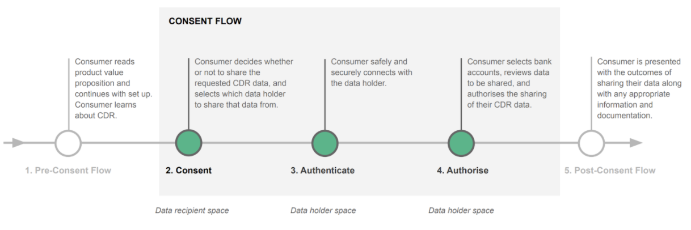
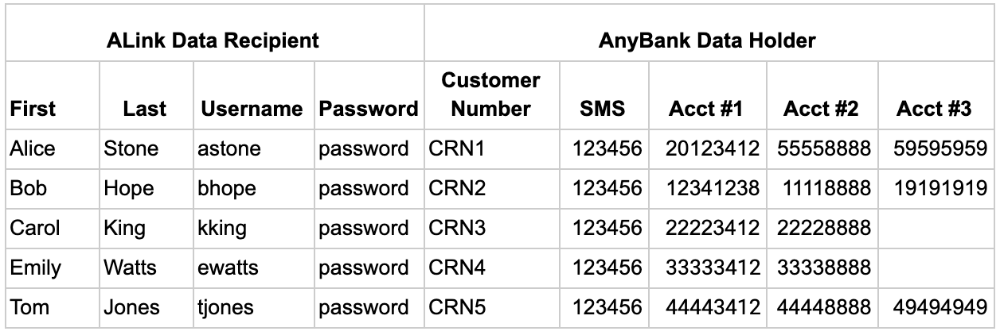

Quick Start Guide ¶
The CDR Sandbox is an all-encompassing “black-box” environment created using Docker to deploy images in stable, network-enabled containers. The sandbox includes preconfigured Docker Compose YAML files for quick and easy deployment in a testing/lab scenario. For production deployments, a more comprehensive orchestration solution (eg. Kubernetes) is recommended.
Prerequisites ¶
- Root access to a Linux or MacOS machine with:
- Git
- Docker
- At least 12GB of RAM available to Docker
- A GitHub Account
- An active Ping Identity support account (Link)
- A working Ping Identity DevOps installation (Link)
Step by Step Guide ¶
Clone the CDR Repository ¶
While installing Ping Identity devops, you should have created a project folder in your home directory. We’re going to host the CDR sandbox here too:
git clone \
https://github.com/pingidentity/pingidentity-cdr-sandbox.git \
~/projects/cdr
Note
Using ~/projects/cdr will make it easier to follow this guide. It will also make it easier for us to help you if you encounter issues.
Configure and Start the Stack ¶
-
Navigate to ~/projects/cdr/docker-compose and copy the cdr.env.template file to cdr.env
cp \ ~/projects/cdr/docker-compose/cdr.env.template \ ~/projects/cdr/docker-compose/cdr.env -
Add the following entries to the /etc/hosts file
127.0.0.1 sso-admin.data-holder.local 127.0.0.1 sso.data-holder.local 127.0.0.1 api.data-holder.local 127.0.0.1 dr.data-recipient.local 127.0.0.1 mockregister.data-holder.local 127.0.0.1 pd.data-holder.local 127.0.0.1 consent.data-holder.local 127.0.0.1 spa.data-recipient.local -
Use docker-compose to bring the CDR Sandbox stack up:
docker-compose \ -f \ ~/projects/cdr/docker-compose/docker-compose.yaml \ up -d -
To display the server logs as the stack starts up, run the following command (ctrl-c to exit):
docker-compose \ -f \ ~/projects/cdr/docker-compose/docker-compose.yaml \ logs -f -
To display the status of each container, run one of the following commands:
docker ps
Run the Data Recipient Demonstration Application - DATA OUT for Data Holders ¶
The Data Recipient Demonstration Application (DR Client) has been provided for the purposes of demonstrating the basic Consumer Journey as detailed in the Consumer Standards Consumer Experience Guidelines.
The DR Client is designed to demonstrate the Data Recipient and Data Holder interaction throughout a consent lifecycle; specifically it implements the Consent, Authenticate and Authorise stages of the Consumer Journey - The Consent Flow.

The DR Client implements the three main roles as defined in the Consumer Data Rights standard:
- The Data Holder - AnyBank
- The Data Recipient - Account Link (ALink)
- The Customer - Alice Stone
The following steps will demonstrate how:
- To establish a consent with Alice’s bank: AnyBank
- To use the ALink application to access transaction data
- Alice can adjust and/or revoke her consent
Throughout the content lifecycle Alice will be able to verify the consent is being enforced by refreshing the Alink application and confirming whether the balances for each shared transaction account are visible or not.
The DR Client is already running as a service if you followed the steps detailed above. To confirm that the service is running enter:
docker ps -f "name=pingdirectory"
And verify that the value of STATUS is “healthy”
Running the DR Client ¶
-
Open your web browser and goto http://dr.data-recipient.local:8080/
SSL Certificates
The sandbox includes a self-signed SSL certificate. You will need to accept the security warning to access the DR Client.
-
At the ALink Data Recipient login page provide the following:
- Username: astone
- Password: password
-
You should now be logged into ALink as the CDR Consumer “astone”
-
Select the My Banks button (top right corner)
-
From the drop down of Data Holders select “AnyBank” and click the Connect button
-
Validate the Consent request and click Start. You will now be redirected to AnyBank to Authenticate and Authorise the consent.
-
At the AnyBank Customer ID prompt enter in Alice’s bank identifier:
- Customer ID: crn1
-
At the SMS OTP field provide the value:
- SMS OTP: 123456
Note
The sandbox includes a mock SMS provider that will accept the OTP value of “123456” for testing purposes.
-
AnyBank will present the Authorisation prompt. Review the authorisation and confirm that it matches the Consent requested by ALink.
Note
The right hand column is dynamic, being populated based upon scopes that are sent from the Data Recipient. For the brevity of the UI and demo the scopes are set to Basic Account Details and Transaction Details.
-
Select the 1st the Transaction Account to share transaction data with ALink
- Click the Confirm button. Alison should be redirected back to ALink.
- On the Alink page the consent should be shown. The consent can be revoked from here.
- Click on the ALink logo to view the shared account balances.
- Repeat steps 5 to 13 specifying additional transaction accounts in step 10 to update the consent
- Note the extra Transaction Accounts and associated balances.
- Select the My Banks button and click the Revoke Consent button. You will receive an alert stating that the Consent has been revoked.
-
To validate the revoked consent click on the ALink logo to view no more shared accounts.
The DR Client uses the following DR users and DH Customer Numbers. Any combination of Username and Customer Number can be used however only one at a time.

Run the Data Recipient SPA Application - DATA IN for Data Holders ¶
The Data Recipient SPA Application (SPA Appliction) is designed to demonstrate the interaction between a DH acting as a DR to "consume" shared data from 3rd party Data Holders. It implements the CDR consent lifecycle allowing customer to consnet a DH to obtain data from anothet DH.
The SPA Appliction used 4 actors that implement the three main roles as defined in the Consumer Data Rights standard:
- The Data Holders - 3rd Party Data Holder and Any Bank
- The Data Recipient - SPA Application (spa.data-recipient.local)
- The Customer - 3rd Party Data Holder (CRN0), ANY Bank (CRN1)
The following steps will demonstrate how:
- Access the 3rd Party Data Holder's DR application
- Authenticate to the 3rd Party Data Holder
- Initiate a sharing flow with Any Bank (Consent)
- Authenticate and Authorise the Consent with Any Bank
- Use the SPA Appliction to access transaction data
The SPA Appliction is already running as a service if you followed the steps detailed above. To confirm that the service is running enter:
docker ps -f "name=pingdirectory"
And verify that the value of STATUS is “healthy”
Running the SPA Appliction ¶
-
Open your web browser and goto https://spa.data-recipient.local/
SSL Certificates
The sandbox includes a self-signed SSL certificate. You will need to accept the security warning to access the SPA Appliction.
-
Select "Any Bank" from the drop down list and click Submit
- You will be asked to authenticate as a customer of the 3rd Party Data Holder
-
- Username: bhope
- Password: password
- You will now be redirected to AnyBank to Authenticate and Authorise the consent.
-
At the AnyBank Customer ID prompt enter in Alice’s bank identifier:
- Customer ID: crn0
-
At the SMS OTP field provide the value:
- SMS OTP: 123456
Note
The sandbox includes a mock SMS provider that will accept the OTP value of “123456” for testing purposes.
-
AnyBank will present the Authorisation prompt. Review the authorisation.
Note
The right hand column is dynamic, being populated based upon scopes that are sent from the Data Recipient. For the brevity of the UI and demo the scopes are set to Basic Account Details and Transaction Details.
-
Select the 1st the Transaction Account to share transaction data with 3rd Party Data Holder
- Click the Confirm button. You should be redirected back to SPA Appliction.
- Click "Exchange Code for Token Response" to continue
- Click "Get Accounts" to retrieve the consented accounts from Any Bank for Customer CRN1.
Accessing Account Data with Existing Arrangement ID ¶
- Click "Start Again"
- Select "..." from the drop down list and click Submit
- Click "Exchange Code for Token Response" to continue
- Click "Get Accounts" to retrieve the consented accounts from Any Bank for Customer CRN1.
Note
You should not be prompted to reconsent.
Shut Down the Stack ¶
When you no longer want to run the CDR Reference Sandbox, you can either stop the running stack, or bring the stack down.
-
To stop the running stack without removing any of the containers or associated Docker networks:
docker-compose \ -f \ ~/projects/cdr/docker-compose/docker-compose.yaml \ stop -
To remove all of the containers and associated Docker networks:
docker-compose \ -f \ ~/projects/cdr/docker-compose/docker-compose.yaml \ down -
To completely remove the CDR Reference images and configuration:
docker system prune --force docker image prune --all --force rm -rf ~/projects/cdr
Other Considerations ¶
Environment Configuration (cdr.env) ¶
The CDR Sandbox configuration is driven by the parameters defined within the cdr.env file that is located in the ~/projects/cdr/docker-compose directory. Some of these parameters can be adjusted to support your environment.
Tip
You will need to restart the sandbox for these changes to apply.
- SERVER_PROFILE_BRANCH
- Default Value: [version of the CDR Sandbox to run. e.g. cdr-1.2-core-001]
- The SERVER_PROFILE_BRANCH value represents the version of the CDR Sandbox to download and execute.
- BASE_HOSTNAME
- Default Value: data-holder.local
- The BASE_HOSTNAME value represents the base DNS name used to access the Data Holder's web services and applications. You will need to ensure hosts files or DNS are updated to reflect the appropriate IP addresses for the containers once the sandbox is running if you change this value.
- BRAND1_BGCOLOR
- Default Value: rgb(50, 115, 220)
- BRAND2_BGCOLOR
- Default Value: #373C41
- PF_BASE_PORT
- Default Value: 443
- The PF_BASE_PORT value defines the listening port of PingFederate.
- BASE_URL
- Default Value: http://dr.data-recipient.local:8080
- The BASE_URL value is the URL used to access the sample Data Recipient application. You will need to ensure hosts files or DNS are updated to reflect the appropriate IP addresses for the containers once the sandbox is running if you change this value.
- DR_CLIENT-authorization_endpoint
- Default Value: https://sso.data-holder.local/as/authorization.oauth2
- The DR_CLIENT-authorization_endpoint value represents the OAUTH2 compliant end point that is required by the CDR Security profile to obtain a valid data sharing token. The end point is hosted by PingAccess to enforce MTLS as well as provide for the ability to capture the value of the minted refresh token. You will need to ensure hosts files or DNS are updated to reflect the appropriate IP addresses for the containers once the sandbox is running if you change this value.
- You will need to update this value if you update BASE_HOSTNAME.
- DR_CLIENT-ss_redirect_uri
- Default Value: http://dr.data-recipient.local:8080/*
- The DR_CLIENT-ss_redirect_uri value is the authorised value that the sample Data Recipient sets up during its Dynamic Client Registration process. This value is stored against the OAUTH Client within PingFederate. You will need to ensure hosts files or DNS are updated to reflect the appropriate IP addresses for the containers once the sandbox is running if you change this value.
- You will need to update this value if you update BASE_URL.
- Default Value: http://dr.data-recipient.local:8080/*
Saving Server Configurations ¶
For your initial deployment of the sandbox, we recommend you make no changes to the docker-compose.yaml file to ensure you have a successful first-time deployment. Any configuration changes you make will not be saved when you bring down the stack. For subsequent deployments, see Saving your configuration changes.